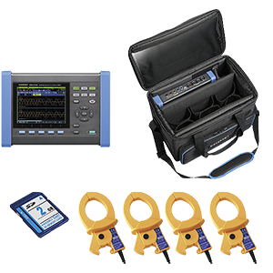
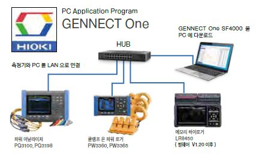

HIOKI
전원품질 아날라이저 PQ3100-92 (600A 센서 4개 세트)
모델 PQ3100-92
계측기
한전 협력사 공급
가격문의
규격·수량에 따라 견적이 달라져 별도 가격을 표기하지 않습니다
상세정보
스펙(제원표)
구매평
Q&A
제품 소개
HIOKI PQ3100-92는 PQ3100 본체에 600A 클램프 전류센서 4개를 세트로 포함해, 3상4선 계통을 센서 추가 구매 없이 바로 측정할 수 있도록 구성한 풀세트 패키지입니다.
주요 특징
- 기본 사양은 PQ3100과 동일, 전압·전류·전력·고조파·플리커 동시 측정
- 600A 클램프 전류센서 4개 세트 포함 (3상4선 계통 즉시 대응)
- QUICK SET 결선 안내, PQ ONE 앱으로 리포트 자동 작성
본 정보는 제조사(HIOKI) 공식 자료를 기준으로 제공됩니다.
세트 내용물

AC 커런트 센서 CT7136(600A) × 4, PQ3100 본체, SD 메모리카드 2GB(Z4001), 휴대용 케이스(C1009) 각 1개로 구성되어 3상4선 계통도 센서 추가 구매 없이 전 채널 즉시 측정할 수 있습니다.
전원 품질 분석기의 사용방법 : 간편한 결선 및 설정
3상 라인의 전압·전류 센서 결선과 기록 시작까지의 설정을 안내하는 "QUICK SET" 기능을 탑재했습니다. 클램프 센서의 방향 실수나 상순의 오결선 등을 자동으로 판정·표시해 수정 포인트를 알려줍니다.
전원 품질을 원격 감시 [GENNECT One SF4000]

측정기와 PC를 LAN으로 연결해, 측정하면서 데이터를 PC에 실시간으로 일괄 표시·저장할 수 있습니다.